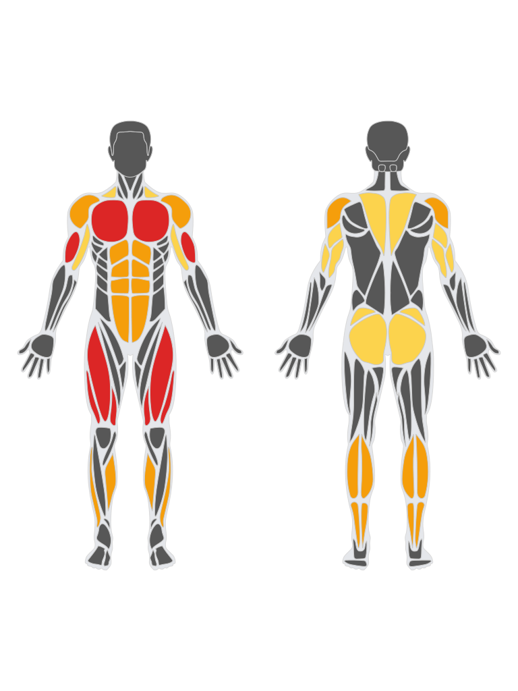

Il tuo laboratorio da Personal Trainer
Area PT: clienti, schede, libreria esercizi e Atlante anatomico. La struttura ora è navigabile.
Clienti
Include La mia scheda.
Esercizi
Prima libreria del progetto.
Distretti Atlante
Struttura anatomica di base.
Clienti
Ogni scheda appartiene al cliente: non esiste un menu Schede separato.
La mia scheda
Qui costruiremo la scheda prescritta dal PT e, separatamente, registreremo ciò che viene realmente eseguito.
Esercizi
Clicca un esercizio per aprire la sua scheda. I media approvati verranno reinseriti nella fase successiva.
Struttura della scheda
Muscoli principali, secondari e stabilizzatori rilevanti saranno distinti e accompagnati dal perché biomeccanico. Nessuna lista indiscriminata di muscoli minori.
Media: da validare / importare
Atlante PT
Completezza anatomica per distretto. La scheda esercizio mostrerà invece solo ciò che è praticamente rilevante.

Esplora il corpo umano
Questa tavola è un file interno di PT Lab, non un collegamento a un’immagine esterna. È una mappa generale: non sostituisce le tavole anatomiche dettagliate dei singoli muscoli.
Tavola da Anatome / react-native-body-highlighter · attribuzione Hicham El Boussarghini; licenze da verificare per ogni asset specifico prima di uso commerciale.
Qui entreranno origine, inserzione, articolazioni attraversate, funzioni, innervazione, capi/regioni e collegamenti agli esercizi con fonti scientifiche specifiche.
Grande gluteo
Musculus gluteus maximus · Regione glutea · MONOARTICOLARE · attraversa e agisce principalmente sull’anca. Non attraversa il ginocchio: il collegamento al tratto ileotibiale non lo rende un muscolo biarticolare.

Identikit del muscolo
Nome: Grande gluteo (Gluteus maximus)
Tipo: MONOARTICOLARE
Quante articolazioni attraversa? Una: l'anca (articolazione coxofemorale).
Che cosa significa? Un muscolo monoarticolare attraversa una articolazione; biarticolare due; poliarticolare più di due. È una classificazione anatomica, non indica quanti movimenti svolge.
Ruolo: potente estensore dell'anca, contribuisce alla rotazione esterna e al controllo del bacino.
Fonte e licenza immagine anatomica ↗Biomeccanica in parole semplici
Durante la flessione dell'anca il grande gluteo tende ad allungarsi. Quando estende l'anca contro resistenza contribuisce al momento estensorio insieme ad altri muscoli, fra cui grande adduttore e ischiocrurali biarticolari. La richiesta effettiva dipende da geometria, carico, profondità, tecnica e profilo di resistenza: non esiste una classifica universale degli esercizi.
Concentrica: nella risalita di un hip hinge l'anca si estende. Eccentrica: nella discesa controllata gli estensori resistono alla flessione. Isometrica: può contribuire al mantenimento della posizione senza apprezzabile movimento.
Esercizi collegati al grande gluteo
Database FLOW completo per le principali famiglie che coinvolgono il grande gluteo: Hip Thrust/Glute Bridge, Split Squat, Squat/Hack Squat, Leg Press, Affondi, Step-up e Hip Hinge/Deadlift. Ogni variante mantiene il proprio nome e codice FLOW: non vengono presentate come equivalenti.
Complementarità: come ragiona il PT
Squat / Hack / Leg press: combinano estensione di anca e ginocchio, con richieste che cambiano con profondità e postura. RDL: enfatizza il pattern di cerniera d'anca con ginocchio relativamente stabile. Hip thrust: offre un'altra configurazione di carico dell'estensione d'anca. Bulgarian: estensione d'anca unilaterale e maggiori esigenze di controllo del bacino.
Non confondere: il grande gluteo è il protagonista di questa scheda; il lavoro mirato per medio e piccolo gluteo richiede un'analisi separata, non è garantito solo perché partecipano alla stabilizzazione.
Fonti consultabili
NCBI Bookshelf · Anatomia del grande gluteo ↗PubMed · Squat / Hip thrust ↗FLOW · Origine fotogrammi e avvertenze ↗
La parte anatomica è distinta dalle proposte applicative PT. I collegamenti PubMed sono ricerche bibliografiche, non prove a sostegno di una graduatoria di esercizi. Le illustrazioni FLOW non sono verificate come istruzioni tecniche professionali.